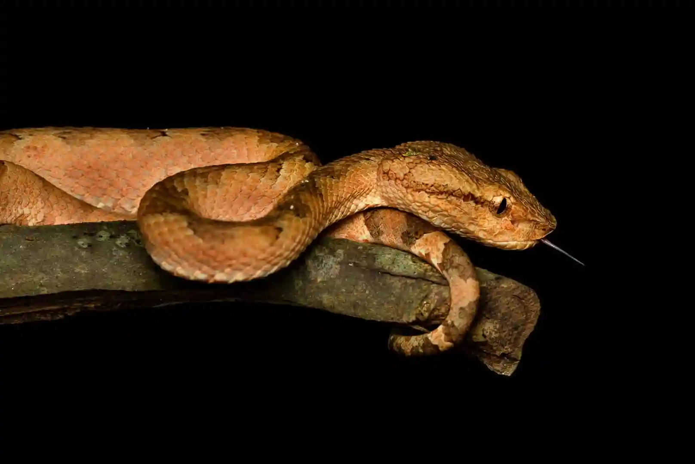
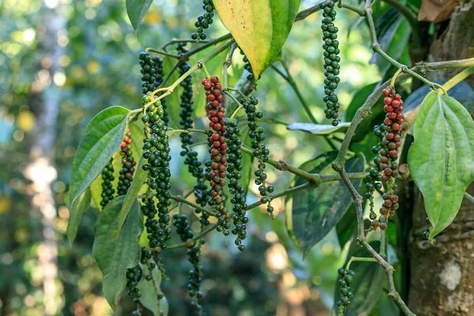

Signature Tours
Expertly guided treks tailored for photography and rare species tracking.
Our Tour Packages
Early Morning Chorus
Experience the forest waking up in optimal morning light.
Guided Sanctuary Trail
An immersive full-day trek deep into the dense evergreen forest.
Night Birding Tour
A specialized evening walk focused on nocturnal species.
Target Species Tracking
A highly customized route designed to find specific rare endemics.
The Photographer's Special
Designed around golden-hour lighting for the perfect shot.
Monsoon Herping Expedition
Track rare Western Ghats endemic reptiles and amphibians on this specialized night trek.
Village & Culture Walk
Explore local Kerala village life and agricultural birding borders.
Spice Plantation Birding
Enjoy flat paths, zero heavy trekking, and sightings of Woodpeckers and Parakeets.

Early Morning Chorus
This 3-4 hour trek starts right at dawn. It is the absolute best time for spotting active songbirds, hornbills, and raptors. The forest canopy comes alive during these hours, offering unparalleled bird activity before the heat of the day sets in.
Expected Itinerary:
- 06:00 AM: Meet your expert guide at the sanctuary entrance.
- 06:15 AM: Enter the forest and track the active morning canopy.
- 08:30 AM: Photography and observation break near the riverbed.
- 09:30 AM: Tour concludes with a review of species spotted.

Guided Sanctuary Trail
An 8-hour deep immersion into the Salim Ali Bird Sanctuary. We travel far beyond the standard trails to explore the undisturbed tropical evergreen ecosystem, increasing your chances of spotting deep-forest endemics.
Expected Itinerary:
- 07:00 AM: Briefing and entry into the deep sanctuary trails.
- 10:00 AM: Tracking specific mid-canopy endemic species.
- 01:00 PM: Packed lunch break in the heart of the forest.
- 03:00 PM: Return trek via a different route to maximize sightings.

Night Birding Tour
Using specialized low-light techniques, we safely track nocturnal life without disturbing them. This is your best opportunity to see the legendary Ceylon Frogmouth, Sri Lanka Bay Owl, and various nightjars.
Expected Itinerary:
- 06:00 PM: Gather for safety briefing and flashlight protocols.
- 06:15 PM: Silent walk begins into known frogmouth territories.
- 07:00 PM: Tracking owl calls and nightjars along the forest edge.
- 08:00 PM: Safe return to the starting point.
Target Species Tracking
Do you have a specific bird on your life list? Tell us beforehand. Our expert indigenous trackers will utilize their lifelong knowledge of seasonal nesting and feeding grounds to design a custom route specifically for your target species.
Expected Itinerary:
- Pre-Tour: Consultation to identify your target species.
- Custom Start: Time is decided based on the bird's habits.
- The Hunt: We proceed directly to known territories and nesting sites.
- Observation: Extended time allocated for watching or photographing the target.

The Photographer's Special
Photography requires patience. Unlike standard walking tours, this package moves slowly, allowing for extended observation times. Guides position you optimally for background isolation to ensure professional-grade wildlife shots.
Expected Itinerary:
- 07:00 AM: Early entry to set up equipment before sunrise.
- 07:15 AM: Golden hour photography session.
- 09:00 AM: Relocating to shaded areas for mid-canopy shots.
- 10:00 AM: Conclusion of the morning session.

Village & Culture Walk
Take a break from the dense jungle. The agricultural borders of Thattekad support an entirely different group of edge-habitat birds. This walk combines gentle birding with an authentic look at rural Kerala village life and spice farming.
Expected Itinerary:
- 08:00 AM: Walk through the agricultural borders of the sanctuary.
- 09:00 AM: Spotting edge-habitat species and visiting spice farms.
- 10:00 AM: Interaction with local Kerala village culture.
- 11:00 AM: Return to the main road/base.

Monsoon Herping Expedition
When the rains arrive, the forest floor comes alive. Track rare Western Ghats endemic reptiles and amphibians, including various tree frogs and the Malabar Pit Viper, on this specialized night trek.
Expected Itinerary:
- 06:00 PM: Safety briefing and leech protection application.
- 06:30 PM: Track frogs and pit vipers near water sources and low branches.
- 07:00 PM: Photography session with macro-friendly subjects.
- 08:00 PM: Safe return to the starting point.

Spice Plantation Birding
A leisurely walk through local, shaded spice farms. Enjoy perfectly flat paths, zero heavy trekking, and fantastic sightings of Woodpeckers, Bulbuls, and Parakeets that are drawn to the fruit and spice trees.
Expected Itinerary:
- 08:00 AM: Arrival at the local partner plantation.
- 08:15 AM: Walk through shaded trails spotting edge-habitat birds.
- 09:30 AM: Learn about the cultivation of black pepper, nutmeg etc.
- 10:30 AM: Conclude the walk with traditional Kerala snacks.